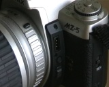
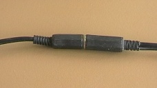
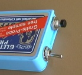

Pentax távkioldó készítése házilag
Bár távkioldót készen is lehet vásárolni, sokkal olcsóbb házilag elkészíteni. A különféle gépekhez eltérő távkioldó tartozik, az itt leírt távkioldó a filmes MZ sorozat (kivéve MZ-S) gépeihez használható. Én MZ-5 géppel teszteltem.
A váz csatlakozója.
A váz oldalán található a csatlakozó, ahová a távkioldót kell csatlakoztatni. Eredetileg egy védősapka védi a csatlakozót. A képen sapka nélkül látható a csatlakozó (mert a sapkát már elveszítettem) [frissítés: pár évre rá a sapka meglett]
{kind=link}
Egy kis drót segítségével könnyen tesztelhetjük (film ne legyen a gépben!) mi történik, ha a 3 érintkező közül kettőt összeérintünk. Ha fentről számozzuk az érintkezőket:
- 1-3: fénymérés, autofókusz.
- 1-2: exponálás
A távkioldó vázhoz csatlakozó része
A távkioldó vázhoz csatlakozó részét legegyszerűbb egy CD audió kábelből elkészíteni. Az audió kábel egyik vége majdnem teljesen megfelel. Egyetlen különbség, hogy ott 4 tüskének van hely (a gépvázon csak 3 tüske van), így egy kicsit le kell faragni a szélét.
{kind=link}
{kind=link}
A távkioldó kábel
Bár tulajdonképpen bármilyen 3 érrel rendelkező kábel jó, legegyszerűbb egy sztereó audiókábelt használni.
Valahol a weben találtam az ötletet, hogy a kábel közepére egy szabványos jack csatlakozást érdemes beiktatni (1 fiú, 1 lány), így ha valamiért hosszabb távkioldóra lenne szükségünk, egy sztereó audiókábellel könnyen meg tudjuk ideiglenesen növelni a távkioldó hosszát.
{kind=link}
A kapcsolók
Legalább két kapcsolóra van szükségünk, az egyik az 1. és 3., a másik az 1. és 2. tüske között zárja az áramkört. Az elsőhöz egy kétállású kapcsolót, a másikhoz egy nyomógombot választottam. Ha bulb-ra is szükségünk van, akkor érdemes egy harmadik kapcsolót is beszerelni, amivel 1. és 3. tüske között úgy zárhatjuk az áramkört, hogy nem kell a gombot folyamatosan nyomva tartani.
Kisméretű dobozt mindenki könnyen talál. Az én dobozom eredetileg cukorkásdoboz volt (ha jól emlékszem), de egy filmesdoboz is megfelelő.
{kind=link}